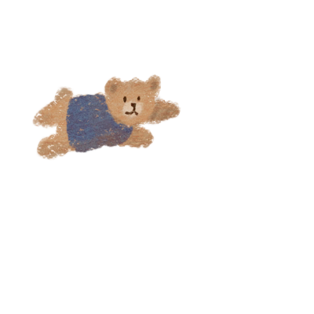
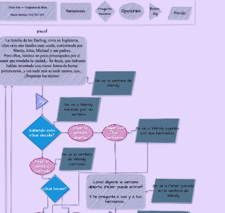
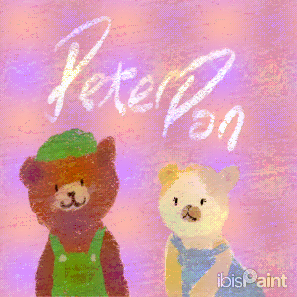
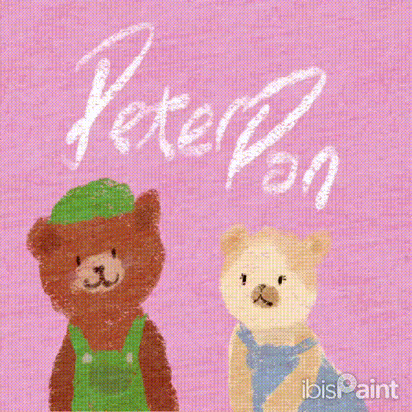
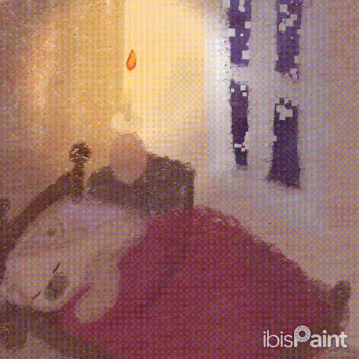
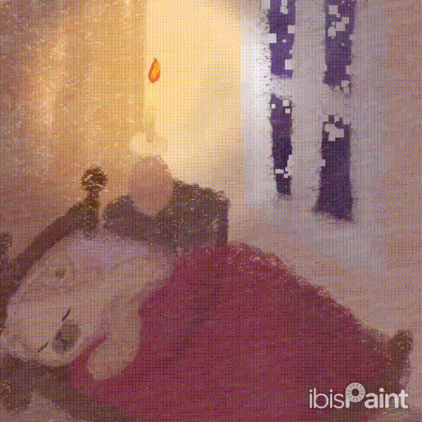

Trabajo Final: Peter Pan
¡Bienvenidos a la página explicativa!
Este trabajo fue hecho por los integrantes:
- Paulita
- Paula
- Mendes Paula
¡Y demás alter-egos!
¿Por qué elegí el cuento “Peter Pan”?
Desde el vamos, amo mucho la historia de Peter Pan y como resuena en mí, específicamente la primer película que lanzaron en nombre del cuento, las haditas, todo ese rollo. ¡Soy fan! Apenas lo pensé, corrí a discord a declararlo como tomado. Como pensé que dibujar personas sería bastaaante complicado, decidí hacer que los personajes fueran animales.
¿Como empezó este proyecto?
El proyecto de Peter Pan empezó en el TP3, en el cuál nos pidieron hacer una aventura gráfica. Luego en el TP5 se nos pidió hacer un mini-juego y finalmente adherirlo a la aventura gráfica, principalmente hice un mini-juego en el que el objetivo era derribar osos desde un barco pirata que pertenecía a Garfio, el juego funcionaba pero me di cuenta que no cuadraría dentro de la aventura gráfica ya que uno juega como Wendy, asi que decidí hacer otro juego: Estrelleta, el que por falta de tiempo (procrastinación) no terminé, el juego estaba funcionando pero era más dificil de incorporar a la aventura que el primer juego: Pulga-Nator.


Empecé a pensar luego de haber elegido el cuento, y lo primero que hice fue re-ver la película, y fui anotando mientras veía, las distintas opciones que podría haber, empezando así mi primer boceto del diagrama de flujo de la aventura. Luego, decidí pasarlo a draw.io, una página que nos recomendaron y quedó… un poco largo

El profe me hizo ver que sí, iba a ser un trabajo tedioso y aparte peor porque yo ya me había idealizado a ilustrar cada una de las pantallas, así que decidí acortarlo *sniffsniff* El diagrama de flujo terminado, fue este: 
Proceso de Dibujos
Aunque presentaba un desafío, logré llevar a cabo el proceso de dibujos. Originalmente, la historia tendría más de 60 páginas, pero decidí reducirla por mi bienestar... jiji.
 

 

Para ilustrar, utilicé la app móvil "IbisPaintX", y un pincel con textura de crayón, para organizarme tenía en notas una larga lista de páginas por dibujar, y mientras pasaban los días hacia la entrega, iba tachando.
Conclusiones
¿Estoy satisfecha con mi trabajo?
Se podría decir, me gusta que siento que hice lo mejor que pude, utilicé mi creatividad y mis habilidades lo más que pude, me gustó mucho ilustrar las pantallas porque siento que eso le dió mi estilo y aparte fue terapéutico, ommm. Estoy preparada para el próximo año, dar lo mejor de mí.